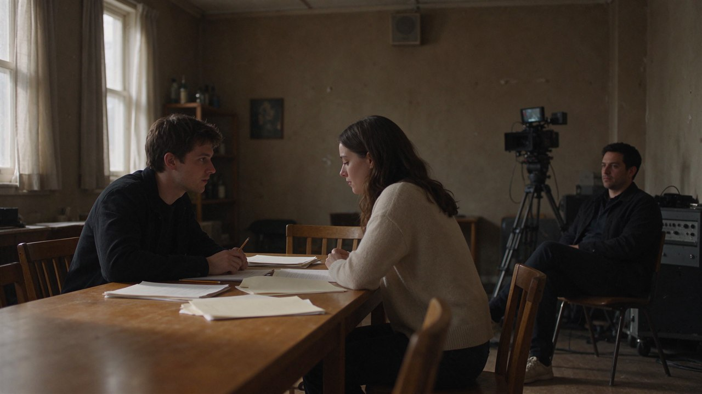

制片 / 选角
选人：先站得住，再看戏
选演员不是找最会演的，是找最适合这段关系的人。先看外形和声音是否成立，再看两个人站在一起有没有事，最后才看台词。试读给一个动作，不给一段独白。
先写他能做什么，不写他是什么样
选人之前，把人物写成动作：他几点起床、怎么开门、等人时手放哪、撒谎时看哪。不要写“温柔”“压抑”“有故事”，这些词演员只能猜。
再列三件不可替代的事：声音、走路、看人的方式。脸可以化，衣服可以换，这三样很难换。年龄感、体力、口音、职业痕迹，哪一样不对，观众第一眼就会出戏。
试读：给一个动作，不给一段独白
让演员做一件具体的事：等人、开门、藏东西、把杯子推远。台词只是这件事的一部分，不是表演的全部。看他在动作里怎么呼吸，怎么停，怎么不看镜头。
不要让人演“悲伤”。让他忍住一件要说的事，观众会自己补。试读时录下来，回看时关掉声音，看他有没有在“等”，还是在“表演等”。
两个人站在一起，才有关系
单独好看不算数。让两个人对读，看身高、语速、谁先眨眼、谁说话时另一个人在听。两个人各自都好，站在一起没有事，就换一个。
试读不要只读最激烈的一场。读一场吃饭、一场找钥匙、一场谁都不肯先挂电话。日常场面最容易看出他们是不是一家人、是不是同事、是不是旧情人。
档期和备选，和表演一样重要
先确认能来几天、能不能熬夜、有没有舞台或镜头经验。一个人来不了，整个日程都要改；所以每个主要角色都留一个备选。
定人之后，把角色小传、脚本、拍摄日期一起发过去。不要只发一句“就你了”，演员到现场才知道要演什么。
图片说明：本页封面、图解与步骤图是编辑示意或结构图，不是本页实测照片，也不能当作器材测试证据；AI 辅助生成的图会在图注标出。判断器材或画面，以正文的测试条件与现场记录为准。

先看两个人之间有没有事，再看台词。AI 示意图 编辑示意图，不是本页实测照片。
DIAGRAM / PRODUCING / CASTING
选角：三道门，不是一张简历
4 条验收
- 人物小传写的是动作，不是形容词？
- 试读给的是一个动作，不是一段独白？
- 两个人站在一起，画面里有没有事发生？
- 档期、替换和角色资料，是否都落到纸上？
意图分工：本页负责「选人：先站得住，再看戏」的可执行细节；同集群先读 排练：先走位，再给台词 建立总判断，再回到本页。